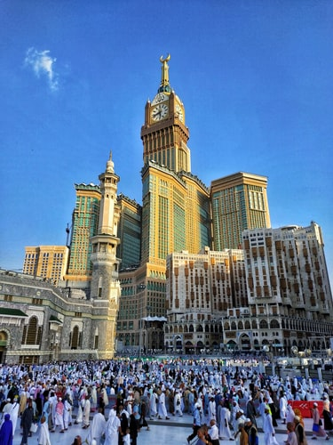
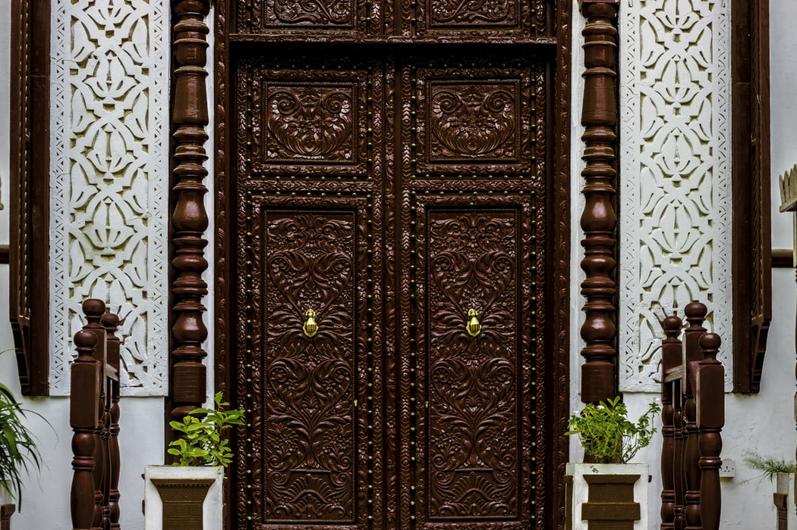
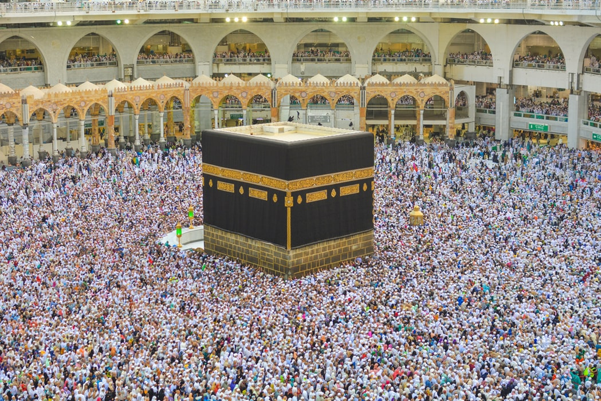
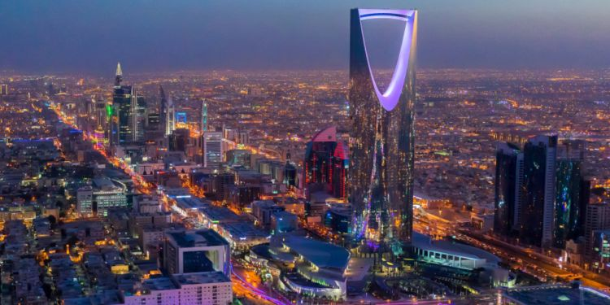
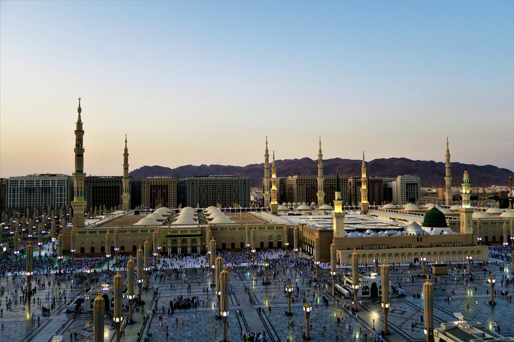
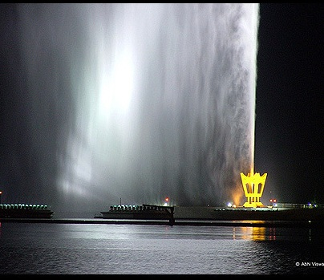

La Mecque, occupant une vallée désertique dans l'ouest de l'Arabie saoudite, est la ville la plus sainte de l'Islam : en effet, c'est la ville natale de Mahomet et de la foi elle-même. Seuls les musulmans sont autorisés dans la ville, et des millions d'entre eux s'y rendent pour le Hajj annuel (pèlerinage). Datant du VIIe siècle, la Masjid al-Haram (Mosquée sacrée) entoure la Kaaba, une structure cubique recouverte de tissu constituant le sanctuaire le plus sacré de l'Islam.

Capitale majestueuse, Riyad est un passage obligé lors de votre séjour en l'Arabie Saoudite. Témoin d'un passé passionnant la ville regorge d'édifices historiques très bien conservés à l'image de sa citadelle et de ses palais majestueux. Pour comprendre toute l'histoire du pays, plusieurs musées vous ouvrent leurs portes. Riyad abrite aussi de belles mosquées qui vous plongeront au cœur de l'islam. Ces monuments et la vieille ville côtoient des édifices et tours d'une grande modernité situés en majorité dans son centre-ville. Avant de quitter la ville n'oubliez pas de faire un tour au souk pour ramener à vos proches des objets issus de l'artisanat local.

Médina est une ville située dans l'ouest de l'Arabie saoudite. Dans le centre-ville, le grand édifice Al-Masjid Al-Nabawi (mosquée du Prophète) est un important site de pèlerinage islamique. Son immense dôme vert s'élève au-dessus des tombeaux du prophète Mahomet et des premiers dirigeants islamiques Abou Bakr et Omar ibn al-Khattâb. La mosquée Al Qiblatain est réputée comme étant le lieu où le prophète Mahomet aurait reçu l'instruction de se tourner vers La Mecque au moment d'effectuer la prière.

Djeddah est située en Arabie saoudite, au bord de la mer Rouge. Il s'agit d'une ville portuaire commerciale moderne et d'un site de passage pour les pèlerinages vers les villes saintes islamiques de La Mecque et Médine. Des complexes hôteliers, des plages et des sculptures en plein air bordent la Corniche, une promenade en bord de mer où se trouve l'emblématique jet d'eau du roi Fahd.
